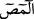

kullanılmıştır. İşte kârî (Kur’an okuyan kimse) bu harfleri okuduğu zaman o melekleri
çağırmış gibi olur. Onlar da icâbet ederler. Kârî, “ ” dediği zaman meleklerden üçü
“Ne diyorsun?” der. Kârî bu harflerden sonrasını okur. Eğer okuduğu cümle bir haber
cümlesi ise melekler: “Doğru söyledin, bu kimse hakka iman etmiş, hakkı söyledi ve
hakkı haber verdi.” derler ve o kimse için istiğfar ederler. “
” ve benzerlerinde de
durum aynıdır. Bu harflere açtığım bu kapıdan bakan kimse hayret verici şeyler görür.
Mukattaa harflerinin cisimleri olduğu bu melekî ruhlar, o kimsenin emrine âmâde olur.
Ellerindeki îmânın şu’beleri ile ona yardım eder ve îmânını korur.”
el-Fütûhât’ın nasihatlar bölümünde der ki: “İmanın şubeleri, Allah’ın birliğine
şehadet, namaz kılmak, zekât vermek, oruç tutmak, hac etmek, abdest almak,
cünüplükten arınmak için gusül etmek, Cuma günü gusül abdesti almak, sabır, şükür,
vera’, haya, emniyet, nasihat, ülülemre itâat, Hakk’ı zikretmek, halka eziyet etmemek,
emaneti yerine getirmek, mazlûma yardımcı olmak, zulmü terk etmek, insanı hor
görmemek, gıybeti terk etmek, çekiştirmeyi terk etmek, tecessüsü terk etmek, birisinin
evine gireceğinde izin istemek, öfkeyi yenmek, doğru olmak, iyi sözü dinlemek, fakir ve
dilencileri iyi sözle savmak, kötü sözü açıktan söylememek, güzel kelime ile ifade
etmek; avret yerini ve dili muhafaza etmek, tövbe, tevekkül ve huşu içinde olmak, boş
sözü terk etmek, mâlâyânîyi terk etmek, ahdine, sözüne ve akdine vefa göstermek, takva
üzere olanlara yardım etmek, günahkâr ve düşmanlara yardımda bulunmamak, takva
üzere olmaya devam etmek, iyilik yapmak, doğruluk üzere olmak, emr-i ma’ruf ve nehy-
i münker yapmak, iki müslümanın arasını düzeltmek, ara açmamak, müminlere karşı
şefkatli olmak, yumuşak davranmak ve mülayim olmak, anne babayı iyilikte bulunmak,
itâatsizliği terk etmek, insanlar için dua etmek ve rahmet dilemek, büyüklere değer
vermek, Allah’ın çizdiği sınırlara uymak, cahiliyet davasını terk etmek, başkasının
ardından kötü söz söylememek, başkalarına düşmanlık beslememek, yalancı şâhidlik
yapmamak ve yalan söz söylememek; hemz, lemz ve gamzı terk etmek, yani önden ve
arkadan kötü söz söylememek, göz kırpmamak ve gammazlık etmemek, cemaatte hazır
bulunmak, selâmı yaymak, hediyeleşmek; güzel huylu ve ahdinde sadık olmak, sırr
saklamak, evlâtlarını nikâhlamak ve kadını nikâhla almak, ehl-i beyte muhabbet
beslemek, kadınları sevmek, güzel kokuyu sevmek, ensâra sevgi beslemek, İslâm’ın
şiârına tazim göstermek, hiyaneti terk etmek, mümin üzerine silâh doğrultmamak, ölmüş
olan kimseyi techiz ve tekfin etmek ve cenaze namazını kılmak, hastanın hatırını sormak,
Müslümanların yolundan zahmet veren şeyi uzaklaştırmak, kendisi için sevdiği şeyi
bütün müminler için de sevmek, Allah Teâlâ’yı ve Rasûlünü her şeyden daha çok
sevmek, küfre tekrar dönmemek; meleklere, kitaplara, peygamberlere ve onların
Allah’tan getirdiği her şeye iman etmek, ve bundan başka Kitab ve sünnetin ihtivâ ettiği
şeyler ki onlar pek çoktur.”
Bir hadîste: “İmân yetmiş küsur şu’bedir. En üstünü “Lâ ilâhe illallah” sözü, en
aşağısı da yoldan insanlara eziyet veren şeyi kaldırmaktır. Haya da îmandan bir